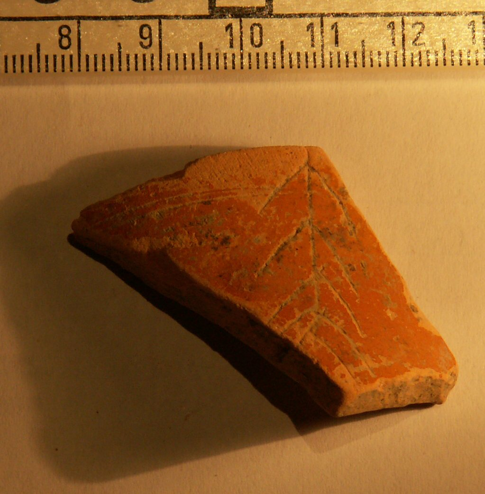

pompelo-008-palma
Grafito de palma sobre cerámica común barnizada (Pompelo, Plaza del Castillo, Pamplona, Navarra)
Pompelo (Pamplona, Navarra), Hispania citerior · s. III d.C.

Texto
Palma (fragmento)
Descripción
- Soporte
- Fragmento del cuello de un jarro de boca moldurada de cerámica común barnizada. Pasta clara y barniz de color naranja solo al exterior.
- Disposición
- Localización del grafito: Pared exterior de la pieza.
- Descripción del grafito
- Fragmento de palma.
- Datación
- s. III d.C.
- Lugar de origen
- Pompelo (Pamplona, Navarra), Hispania citerior
- Hallazgo
- Excavación de la Plaza del Castillo de Pamplona (2001-2003), sector 3. Según el contexto general de la excavación, las piezas aparecieron en un barrio artesanal. Los estratos están revueltos y no hay estratigrafía válida para fechar las piezas: la datación se basa en las formas cerámicas.
- Ubicación actual
- Almacén de Arqueología del Gobierno de Navarra
Bibliografía
- P. Ozcáriz Gil; M. Unzu, «Grafitos figurativos, palmas, tridentes y otros signos en cerámica romana de la Plaza del Castillo de Pamplona», Príncipe de Viana 253 (2011), pp. 79-95.